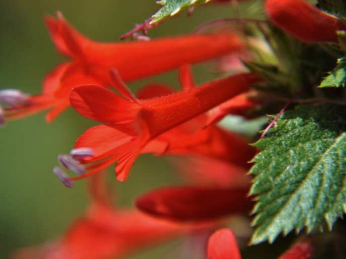
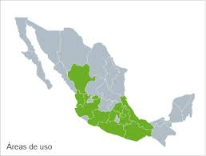
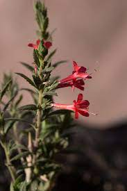

Espinosilla
 Descripción
Loeselia mexicana es una planta herbácea a arbustiva de hasta 2 m de alto, de base leñosa, con tallos erectos ramificados desde la base. Las pequeñas hojas rígidas y ásperas al tacto, son densamente pubescentes, ovadas a lanceoladas y de margen aserrado. Las flores crecen de modo solitario o agrupado en las axilas de las hojas. La vistosa corola es roja a veces amarillenta, rosada o blanca— con cinco lóbulos anchos. Los estilos sobrepasan la corola Hábitat Es originaria de Texas a Guatemala. Habita en climas cálido, semicálido, semiseco y templado, entre los 80 y hasta los 3900msnm. Planta silvestre que crece en terrenos de cultivo abandonados y está presente como maleza en el nivel interior de bosques templados, asociada a vegetación perturbada de bosque tropical perennifolio, matorral xerófilo, pastizal, bosques de encino, de pino, mixto de pino-encino y de junípero

Usos medicinales
Es empleada con mayor frecuencia para la calentura, padecimiento que puede provenir de diferentes causas y se caracteriza por dolencia de cuerpo y cabeza, a causa de resfriado o gripe, o por temperatura en el estómago como suponen en Tlaxcala, o a consecuencia de fiebres puerperales.
Es también utilizada contra desórdenes de tipo digestivo como bilis, disentería, dolor de estómago, indigestión, inflamación del estómago, "tapeaduras", tifoidea, "ventiados" y vómito.
Así mismo se recurre a la espinosilla en enfermedades respiratorias tales como bronquitis, gripa, resfriados, ronquera y tos.
Se reporta su uso para combatir la fiebre puerperal, la disentería y la bronquitis, entre muchos otros. De la planta también se ha aislado la dafnoretina, un compuesto que ha demostrado tener efecto ansiolítico
Historia La primera referencia encontrada para esta planta la proporciona Francisco Hernández en su obra del siglo XVI, donde relata que "el humo de esta hierba ahuyenta las moscas, alivia el pecho y las afecciones frías, provoca la orina, limpia el vientre. A inicios del siglo XVII, Francisco Ximenes señala: dicen algunos que socorre a las mordeduras de animales ponzoñosos, lo cual debe de hacer confortando el corazón y expeliendo el mal humor por los poros y vías más secretas del cuerpo, por alguna virtud y propiedad oculta.
Química y farmacología Muy poco se conoce sobre la química de esta planta. De las partes aéreas se ha identificado un derivado pentahidroxilado del ácido olleanólico en una proporción del 1%. Este es el único reporte que se encontró y el trabajo fue realizado por investigadores mexicanos.
En las ramas de esta planta se han detectado, un aceite esencial, alcaloides, resina, saponinas, colorante y taninos.
Se recomienda para problemas de la piel. Sirve para evitar la caída del cabello, así como para mejorarlo, contra la caspa y el cabello graso. Así como en padecimientos eruptivos como erisipela, rubéola, sarampión y varicela. Se le emplea además en padecimientos renales, contra cálculos e inflamación de riñón. Es útil para tratar dolor de cabeza, inflamación del abdomen, postemas, para el susto, aire y para convalecientes. También como depurativo de la sangre, desinfectante, diurética y purgante.
En Datos para la Materia Médica Mexicana, a fines del siglo XIX se retoma la información de Hernández. Agrega, que Mociño y Sessé la mencionan para combatir las fiebres catarrales. La Materia Médica Mexicana, refiere: "es un poderoso sudorífico, cuando no obra el sudor es un buen diurético. Como diaforético a veces, en otras se lleva su acción al aparato uropoiético manifestándose en otros efectos emeto-catárticos, determinando vómitos y diarreas de materiales biliosos y que presentan un color verde intenso. Para combatir las inflamaciones de la garganta".
En el siglo XX, Alfonso Herrera señala que según el vulgo, esta planta goza de gran reputación para curar las fiebres en general; pero cuando se hicieron experimentos en los hospitales San Andrés y Juárez no se obtuvo ningún efecto antitérmico, ni diurético, ni diaforético. El efecto emeto-catártico se ha presentado en los enfermos en forma transitoria. En cambio Paul Stanley, en la misma época señala que se utiliza como remedio para las fiebres, tiene propiedades eméticas, purgantes, diuréticas y sudoríficas.

Audio Espinosilla